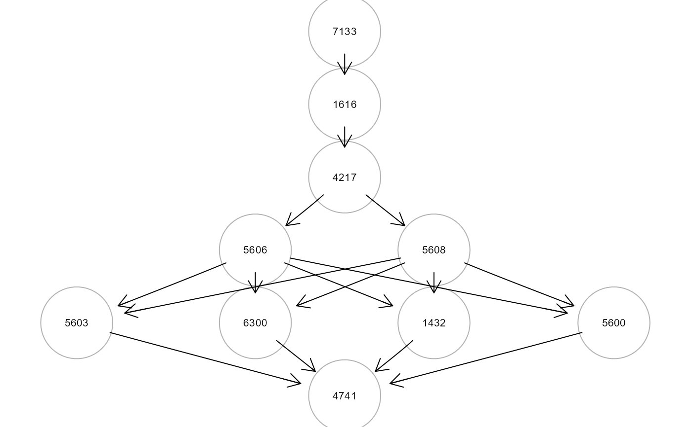
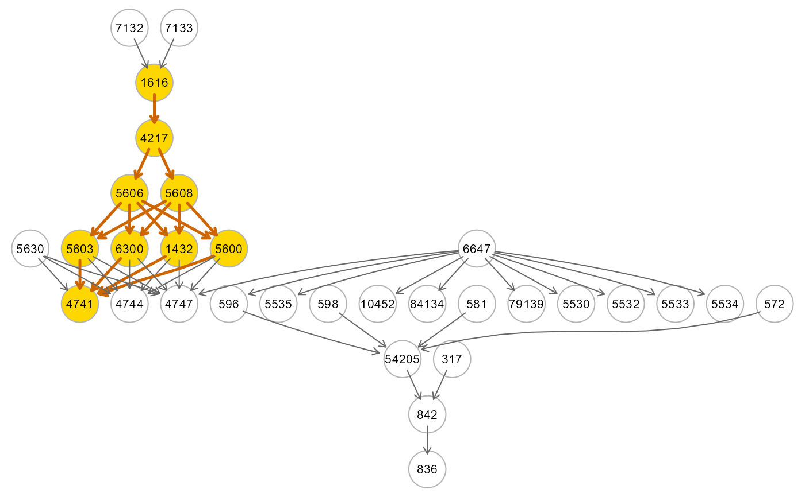

This function uses SEMace to find
significant causal effects between source-sink pairs and
SEMpath to fit them and test their edge
perturbation.
pathFinder( graph, data, group = NULL, ace = NULL, path = "directed", method = "none", alpha = 0.05, verbose = FALSE, ... )
| graph | Input network as an igraph object. |
|---|---|
| data | A matrix or data.frame. Rows correspond to subjects, and columns to graph nodes (variables). |
| group | group A binary vector. This vector must be as long as the
number of subjects. Each vector element must be 1 for cases and 0
for control subjects. Group specification enables edge perturbation
testing. By default, |
| ace | A data.frame generated by |
| path | If |
| method | Multiple testing correction method. One of the values
available in |
| alpha | Significance level for ACE selection (by default,
|
| verbose | Show the significant directed (or shortest) paths inside the input graph. |
| ... | Currently ignored. |
A list of 3 objects:
"paths", list of paths as igraph objects;
"fit", fitting results for each path as a lavaan object;
"dfp", a data.frame containing SEM global fitting statistics.
Fernando Palluzzi fernando.palluzzi@gmail.com
# \donttest{ # Find and evaluate significantly perturbed paths library(huge) als.npn <- huge.npn(alsData$exprs)#> Conducting the nonparanormal (npn) transformation via shrunkun ECDF....done.#> d-separation test (basis set) of 420 edges ... #> #> Number of significant local tests: 220 / 420 #>#> #> Frequency distribution of path length from X to Y : #> 1 2 3 4 5 #> 12 1 3 1 6 #> #> ACE 1 of 23 ACE 2 of 23 ACE 3 of 23 ACE 4 of 23 ACE 5 of 23 ACE 6 of 23 ACE 7 of 23 ACE 8 of 23 ACE 9 of 23 ACE 10 of 23 ACE 11 of 23 ACE 12 of 23 ACE 13 of 23 ACE 14 of 23 ACE 15 of 23 ACE 16 of 23 ACE 17 of 23 ACE 18 of 23 ACE 19 of 23 ACE 20 of 23 ACE 21 of 23 ACE 22 of 23 ACE 23 of 23#> sink op source d_est d_se d_z pvalue d_lower d_upper #> 9 5534 <- 6647 0.723 0.199 3.633 0.000 0.333 1.112 #> 14 836 <- 317 -0.524 0.168 -3.120 0.002 -0.853 -0.195 #> 21 4747 <- 5630 0.523 0.201 2.595 0.009 0.128 0.918 #> 19 4741 <- 7133 0.786 0.315 2.498 0.012 0.169 1.403 #> 4 4747 <- 6647 0.376 0.162 2.312 0.021 0.057 0.694 #> 6 5530 <- 6647 -0.360 0.174 -2.063 0.039 -0.702 -0.018 #> 7 5532 <- 6647 0.369 0.181 2.035 0.042 0.014 0.724paths <- pathFinder(graph = alsData$graph, data = adjData, group = alsData$group, ace = ace)#> #> Found 7 significant ACEs. #> #> pathId sink op source N.nodes N.edges dev_df srmr pv.act pv.inh #> 1 P9 5534 <- 6647 2 1 NaN 0.000 0.000000 0.109027 #> 2 P14 836 <- 317 3 2 0.182 0.010 0.001450 0.678200 #> 3 P21 4747 <- 5630 2 1 Inf 0.000 0.339141 0.730509 #> 4 P19 4741 <- 7133 10 16 2.768 0.081 0.000002 0.000817 #> 5 P4 4747 <- 6647 2 1 NaN 0.000 0.635197 0.083373 #> 6 P6 5530 <- 6647 2 1 NaN 0.000 0.997656 0.008233#> lhs op rhs est se z pvalue ci.lower ci.upper #> 1 z1432 ~ group -0.017 0.072 -0.238 0.812 -0.157 0.123 #> 2 z1616 ~ group 0.051 0.080 0.644 0.520 -0.105 0.207 #> 3 z4217 ~ group 0.062 0.077 0.802 0.422 -0.089 0.213 #> 4 z4741 ~ group 0.444 0.073 6.110 0.000 0.302 0.587 #> 5 z5600 ~ group -0.296 0.076 -3.910 0.000 -0.445 -0.148 #> 6 z5603 ~ group 0.003 0.079 0.032 0.974 -0.153 0.158path19 <- SEMpath(graph = alsData$graph, data = adjData, group = alsData$group, from = "7133", to = "4747", path = "directed", verbose = TRUE)#> Path: 7133 -> 4747 size- 10 16 -- #> #> NLMINB solver ended normally after 11 iterations #> #> deviance/df: 2.607828 srmr: 0.07847445 #> #> Brown's combined P-value of node activation: 0.3594459 #> #> Brown's combined P-value of node inhibition: 0.0005751199 #># }